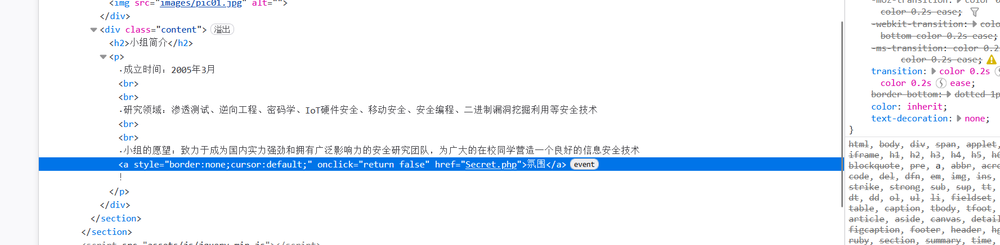
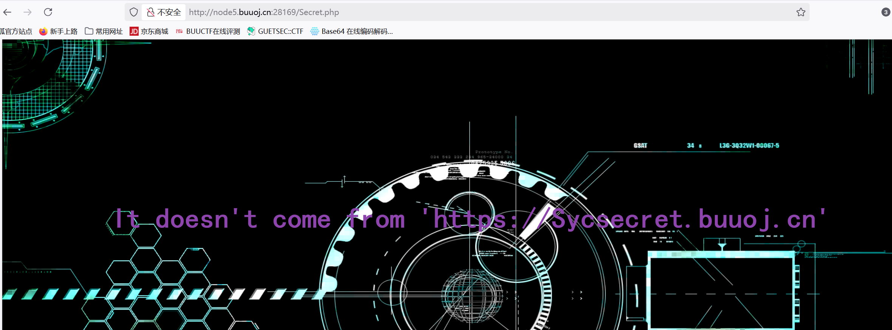
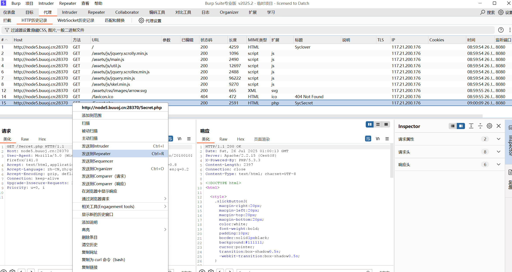
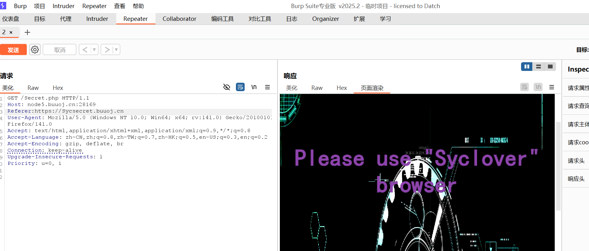
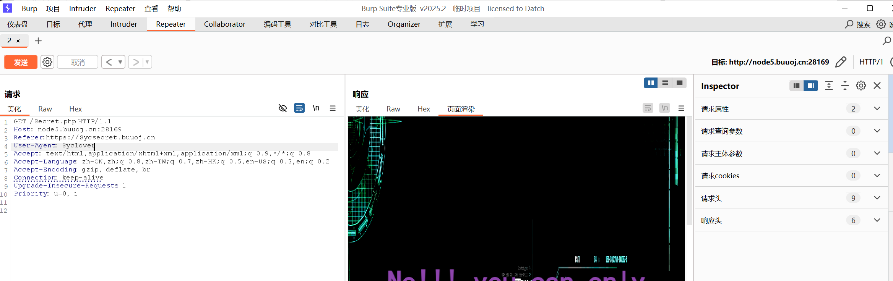
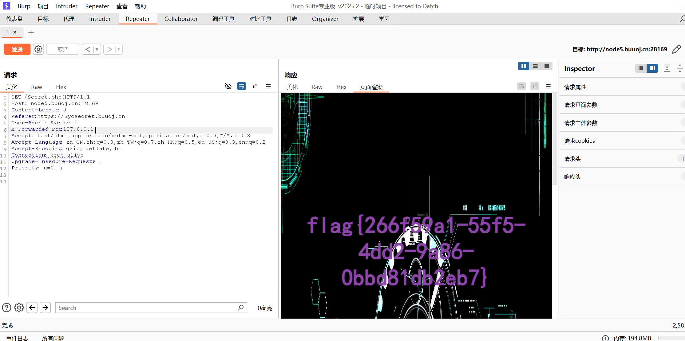

BUUCTF-Web-[极客大挑战 2019]Http
本文为记录个人信安小白的刷题路程，大佬勿喷，也同时希望文章能对您有所帮助
前端检查
打开靶机，F12查看前端源码，

发现Secret.php文件，访问看看
Referer字段

你不来自’https://Sycsecret.buuoj.cn‘
显示请求头不对，
使用Burp抓包修改请求头，
找到Get请求Secret.php历史记录发送到Repeater

HTTP Referer（或 Referrer） 是 HTTP 请求头的一个字段，用于表示当前请求是从哪个网页链接过来的。它的主要作用是告诉服务器用户浏览器的来源页面，通常用于统计分析、防盗链、日志记录等场景。
通过添加请求头来告诉服务器访问来源
1 | Referer:https://Sycsecret.buuoj.cn |

User-Agent字段
User-Agent 是 HTTP 请求头中的一个重要字段，用于标识发起请求的客户端（如浏览器、爬虫、应用程序等）的软件类型、版本、操作系统等信息。服务器可以根据该字段返回适配的内容，或用于统计分析、访问控制等场景。
示例
1 | Mozilla/5.0 (Windows NT 10.0; Win64; x64) AppleWebKit/537.36 (KHTML, like Gecko) Chrome/120.0.0.0 Safari/537.36 |
1.Windows NT 10.0：Windows 10
2.Chrome/120.0.0.0：Chrome 120 版本
3.Safari/537.36：基于WebKit引擎（Safari同源）
返回页面提示我们使用Syclover浏览器，可以用User-Agent协议来伪造访问工具为Syclover浏览器
修改User-Agent
1 | User-Agent: Syclover |

提示我们需要本地访问
X-Forwarded-For字段
X-Forwarded-For 是一个 HTTP 请求头，用于标识客户端的原始 IP 地址，尤其是在请求经过代理服务器（如Nginx、CDN、负载均衡器）时。它是 事实上的标准（非官方RFC），广泛应用于日志记录、访问控制、反欺诈等场景。
我们可以利用X-Forwarded-For字段伪造本地ip127.0.0.1
添加字段
1 | X-Forwarded-For:127.0.0.1 |

获得flag
想更了解http请求推荐这位师傅的文章：
https://blog.csdn.net/2301_79964672/article/details/140648157